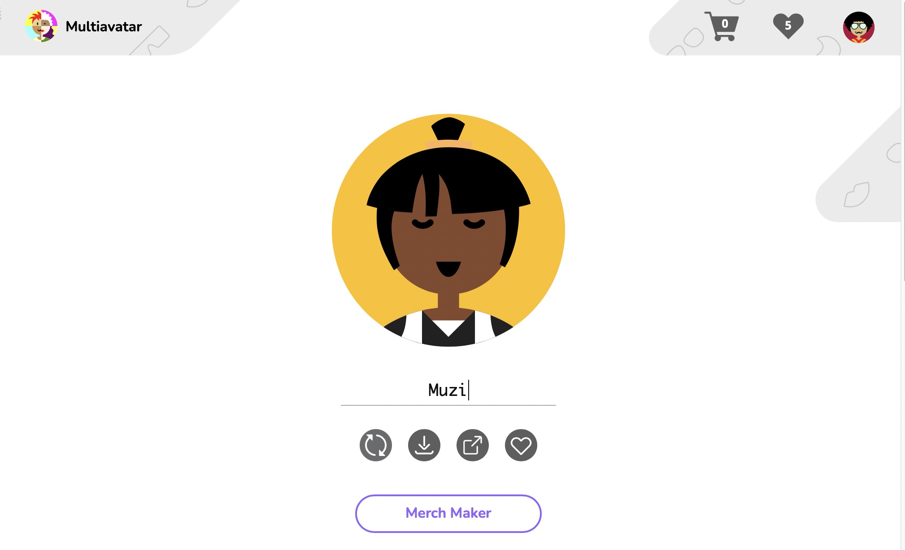
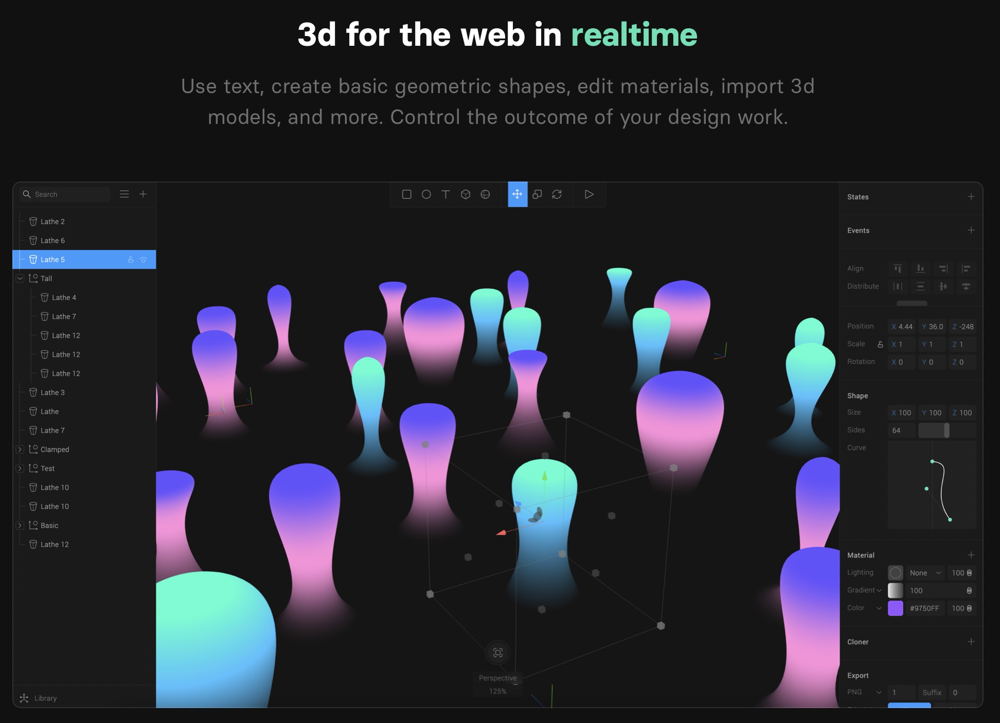
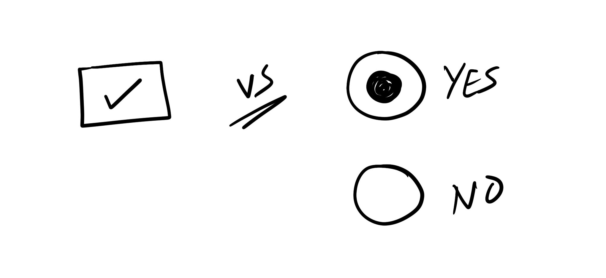
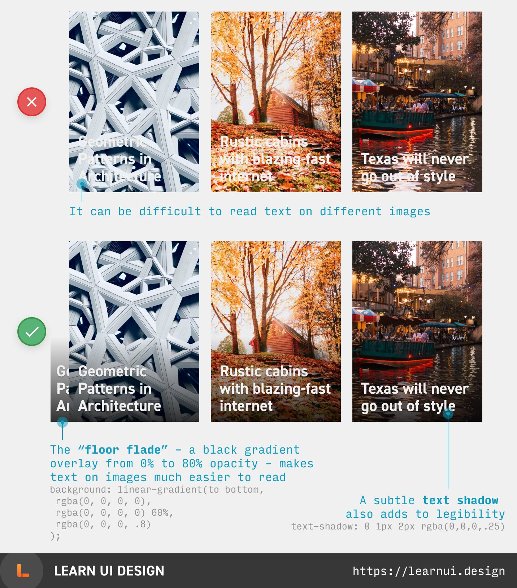
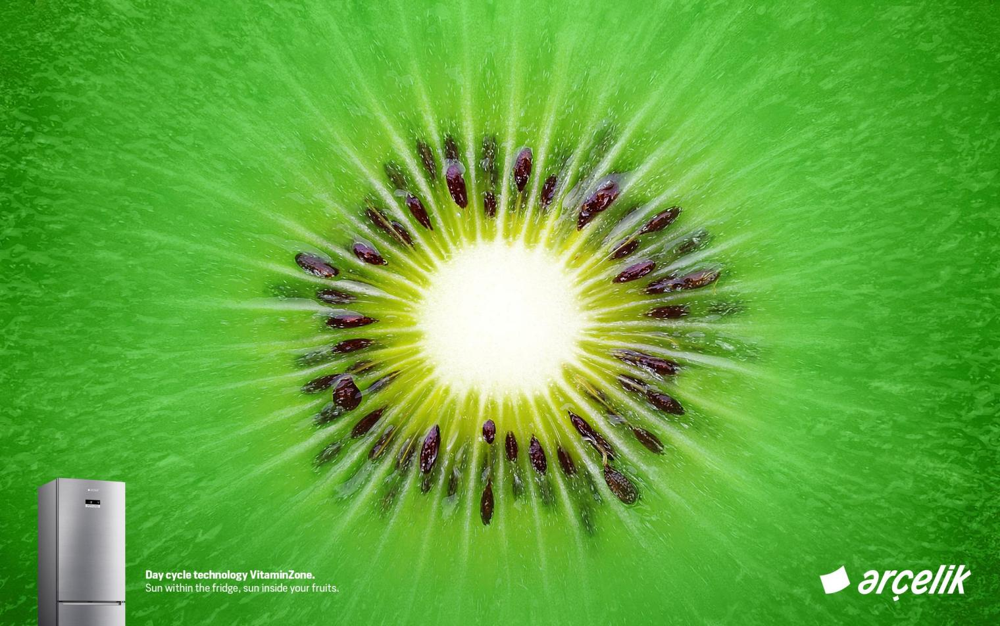
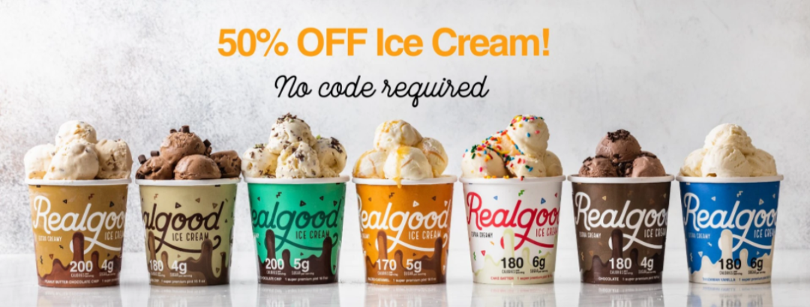

设计周刊 Design Weekly #36
Thu, Dec 3, 2020
🏷 设计资源
Multiavatar-头像生成器
一个可以通过输入任何信息或刷新就可以生成头像的工具。
总共可以生成 120 亿个独一无二的头像。所有的内容都是随机的，如有雷同纯属巧合。这个平台还能根据生成的头像定制 T恤杯子等。
看下我生成的头像，还不错哦~快去试一下吧~

Spline-一款网页版的 3D 设计工具
轻松创建和发布3D设计，你可以通过创建编辑文本、几何形状、材料、导入 3D 模型等来创造属于你的3D 效果图。

🏷 设计文章
Yes or No？-关于复选框和两个单选按钮的思辨
https://www.sarasoueidan.com/blog/one-checkbox-or-two-radio-buttons/
用复选框还是两个单选按钮呢？当你同时使用两个单选按钮时，你应该使用哪一个？

50+实用的UI/UX设计技巧(每周日1条)
https://twitter.com/erikdkennedy/status/1328771593934290944
设计师 Erik D. Kennedy 每周在 twitter 上更新一条 UI/UX 设计技巧。方法值得借鉴~学习啦~

🏷 设计灵感
能在冬日温暖你的，除了阳光，还有你的冰箱
https://www.topys.cn/article/31224
家电品牌Arçelik最近开发出一项新（黑）科技：让阳光住进你的冰箱，这样就能欺骗放在里面的水果蔬菜，让它们误以为自己还长在树上或地里，从而保持最新鲜的状态。

Foodaily带来2021年冰淇淋十大创新趋势！
https://www.shejipi.com/484658.html
疫情的蔓延为今年冰淇淋市场的火爆创造了一个机会，更多消费者开始在家中享受冰淇淋，以排解疫焦虑疲惫的情绪。正如Mintel所言，在应对疫情的不确定性时，许多消费者习惯转向熟悉而令人放纵的食物，且有51%的消费者将冰淇淋与舒适感联系在一起，希望从中获得舒缓和治愈。于是，不仅是中国，全球冰淇淋市场都意外呈现出不减反升的喜人趋势。
